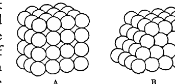

Chapter I#
Boyhood and Owens College#
I was born in Cheetham, a suburb of Manchester, on December 18, 1856; both time and place were fortunate, for the period between then and now has been one of the most eventful in the history of the world. From the beginning to the end, and especially in the latter half, there has been a quick succession of one stupendous event after another. Monarchies have fallen, and have been replaced by Republics and Dictatorships. Free trade, which as a Manchester man I naturally regarded for long as essential to the prosperity of the country, has gone too. But it is not of such things I shall speak in these reminiscences; more in my province are the inventions and discoveries made in the period which have wrought great changes in our social life. When I was a boy there were no bicycles, no motor cars, no aeroplanes, no electric light, no telephones, no wireless, no gramophones, no electrical engineering, no X-ray photographs, no cinemas and no germs, at least none recognised by the doctors.
It was a mere accident that I became a physicist; it was intended that I should be an engineer. In those days the only way of entering this profession was to be apprenticed to some firm of engineers, paying a considerable premium for the privilege. It was arranged that I should be apprenticed to Sharp, Stewart & Co., who had a great reputation as makers of locomotives, but they told my father that they had a long waiting list, and it would be some time before I could begin work. My father happened to mention this to a friend, who said, “If I were you, instead of leaving the boy at school I should send him while he is waiting to the Owens College: it must be a pretty good kind of place, for young John Hopkinson who has just come out Senior Wrangler at Cambridge was educated there.” My father took this advice, and I went to the College.
This accident, which I regard as the most critical event in my life and which determined my career, could not have happened in any English provincial town except Manchester, for there was no other which had anything corresponding to Owens College. And it could not happen now in any town in England, though now there are many which have such Colleges. I was only fourteen when I went to Owens College, and I believe that sixteen is now the minimum age at which students are admitted to such Colleges. Indeed the authorities at Owens College thought my admission such a scandal—I expect they feared that students would soon be coming in perambulators—that they passed regulations raising the minimum age for admission, so that such a catastrophe should not happen again.
The first thing I remember about my education was being sent when a very small boy to dancing classes. I remember them though it is more than seventy years ago, because I hated them so intensely; after a short time, however, the attempt to teach me dancing was given up as hopeless. After going for a year or two to a small school for young boys and girls, kept by two maiden ladies who were friends of my mother, I went to a private day school kept by two brothers named Townsend, at Alms Hill, Cheetham, which was near to where we lived. It was a school which was not affected by the new views on education which were just then coming in. We were taught Latin from the Eton Latin Grammar, where the rules for syntax and grammar were in Latin, and we learnt these by heart before we knew what they meant. This was by no means so absurd as it might seem, as they were very skilfully written for their purpose. Erasmus is said to have had a hand in them. They rhymed, which made them very easy to remember; and they were very sonorous, which made it quite a pleasure to roll them off. When I went to the Owens College, where they used a more up-to-date Grammar—I think it was called the Public Schools Latin Primer—I thought it very pallid and arid, and much preferred the lusciousness of the other. When I removed my books to Trinity Lodge in 1918 I came across the copy I had used at school, which I had not opened for nearly fifty years, and found that when I once got started I could go on with the “propria quae maribus” and the “as in presenti perfectum format in avi”, without a slip. I think that nowadays not enough advantage is taken of the ease with which boys can learn things by heart, indeed some people seem to regard memory almost as something which ought to be apologised for. The way we were taught English was to make us learn by heart “purple patches” from Shakespeare, Byron, and Scott, and I think this a better way than just reading the notes at the end of school editions of the works of these authors, which is now not an unusual way of preparing for an examination. We did not write essays; the only English “composition” we did was to write at the end of term a letter to our parents about what we had been doing. This was dictated by the master of the form. I remember one of them which began, “My dear Parents — England this day expects every man to do his duty”—it was once the signal prelude to a great naval victory—and thinking it would never have occurred to me to begin in that way.
History was not much more than learning a large number of dates, geography a description of the boundaries, principal towns and rivers of various countries, with a little map-drawing. In mathematics we learnt the propositions in the first book of Euclid by heart; we did not do any algebra, but a great deal of arithmetic which was well taught. I think it forms the best introduction to mathematical ideas and is an excellent intellectual gymnastic, for it is easy to set simple questions which cannot be solved by rule of thumb, but require thought. Our knowledge was prevented from getting rusty by an ingenious device: lessons stopped a quarter of an hour before school ended, then the master would ask the boy at the head of the form some question—it might be a date in history, a sum in mental arithmetic, the Latin for an English word or the English for a Latin one and so on; if his answer was right he could leave at once; if not, the question went on to the next boy, and so on until someone answered it correctly and went out. A new question was then put to the boy next to him, and this process was repeated. A boy could not get out before the end of school unless he answered a question correctly. We had to do preparation at home, which generally took about an hour and always included something which had to be written out, a piece of Latin translation, sums or a piece of poetry—great attention was paid to the handwriting in these, and we got very few marks if this was not satisfactory. There were no examinations, and the prizes were awarded on the work done during the year. On the whole, I think I did not learn less under this old-fashioned system than I should under a modern one, but then, as I have said, I left the school when I was very young.
As for games, the older boys played cricket and football and a number of minor games such as rounders, prisoners’ base, and a crude form of hockey called shinty which had no rule—or, if there was one, no one paid any attention to it—against raising the club, and I remember getting hit in the eye by a full swing. Fortunately it did not injure my sight. Football then was rather a gruesome business; “hacking” was allowed, that is, the forwards in the scrum just kicked at anything in front of them, whether it was the ball or the shins of the opponents; the result was that after a game one’s shins were always bruised and often bleeding. We also played single-stick, an excellent game both as a gymnastic and as a training in keeping one’s temper under provocation, as a hit over the legs arouses emotions which it requires practice to suppress.
Towards the end of my schooldays, the war between France and Germany broke out; at first our sympathies were all with Germany; we thought, like many people wiser than ourselves, that poor Germany would have no chance against the great army of France. It was not very long, however, before our sympathies were all the other way.
When I was a boy I was, as I am now, very fond of gardening, and had a little garden in which I was allowed to do as I liked. I spent the greater part of my pocket-money on a weekly gardening paper—there were no penny ones in those days. This paper was the ruin of my garden, for from time to time it gave such alluring accounts of some plant I had not got, that I felt I must buy a packet of seed and try to grow it. My garden was so small that the only way I could find room for this was to pull up something already growing, so that most of my plants came to an untimely end. I was also, as I have been all my life, fond of searching for wild flowers and of reading books about them, and thought that when I grew up I should like to be a botanist. The scientific names of plants irritated me greatly; it was the days when the Linnaean system was almost universal, and I determined that if I became a botanist I would do all I could to purge botany from science.
Natural history was pressed into the service of boys when I and some of my friends tried to raise money to buy wickets, bats and balls for a small cricket club we wanted to start, by having an exhibition of butterflies, moths, birds’ eggs and wild flowers which our relatives were expected to attend, and pay for admission. This worked quite well financially, but there was an unfortunate incident. An aunt of mine, looking at an exhibit of a big moth with a pin stuck through it, saw that the moth was alive and trying to get away. She was very indignant and rated the boy soundly for not killing it before pinning it down; he excused himself by saying, “Well if it’s not dead, it’s its own fault. I’ve been pinching its head all morning.” Another occasion, when I got some fun as well as instruction from my excursions into science, was once when a friend came in as I was using a microscope my father had given me. I showed it to him, plucked a hair from my head and put it on the slide and told him to look at it; he did and seemed very much interested, much more so than I had expected, for he was not very intelligent. He kept screwing it up and down. I thought perhaps the hair had been blown away. So I said, “Can you see it?” “Oh yes,” he said, “I can see it.” “Doesn’t it look very big?” “It looks big enough, but I can’t see the number on it.” “Number,” I said, “what number?” “Well,” he said, “it says in the Bible that the hairs of our head are all numbered, but I can’t find any number on this.”
The Owens College#
Manchester has played a prominent part in the history of physical science, for in it, in the first half of the nineteenth century, Dalton made the experiments which led him to the discovery of the law of multiple proportion in chemical combination, and Joule those which were instrumental in establishing the principle of the Conservation of Energy. Notable discoveries, though not of the same rank as these, were made by Sturgeon, the inventor of the electromagnet, and the Henrys, father and son, who did good work in physical chemistry.
The Manchester Literary and Philosophical Society is, I believe, the oldest, as it is certainly quite one of the most important, of such societies. In 1781 it began, as such societies generally did, by informal meetings of a few friends in each other’s houses. This developed into weekly meetings at a tavern; then a house was built, and in 1800 John Dalton, the great chemist, was appointed Secretary. He had come to Manchester shortly before this as teacher of mathematics in the newly established Manchester College, an unsectarian College, which was the germ from which Manchester New College developed. His laboratory was in the house of the Society, and his diary is still in their possession. It was published in Roscoe and Harden’s New View of the Origin of Dalton’s Atomic Theory, 1806. It shows that Dalton, influenced by the views of Newton, believed in the existence of atoms long before 1803, when his great paper was read before the Philosophical Society, and also that, contrary to the view previously held, Dalton was not led to the discovery of the atomic theory by discovering the law of Chemical Combination in multiple proportion, but was led by the atomic theory to the discovery of this law. Though not the author of the atomic theory, he has strong claims to have been the first to prove it, or at any rate to find evidence in its favour which, if not absolutely conclusive, was immensely stronger than any that had been obtained before. In 1817 he was elected President of the Society, and remained so until his death in 1844. He was not a fluent speaker, and when, as President, he had to make a few remarks when the reader of a paper stopped, he is reported to have sometimes contented himself by saying, “This paper will no doubt be found interesting by those who take an interest in it”.[2]
Though he was one of the shyest and most retiring of men, the Manchester people knew that they had a great man living among them, and were proud of it. They showed their appreciation by raising in his lifetime a sum of £2,000 for a statue by Chantrey. On the day of his funeral many of the mills and shops were closed; and an important street in the city is called John Dalton Street.
Dalton was succeeded as President by James Prescott Joule, who had been his pupil: he had refused, however, to let him go on to chemistry until he had read mathematics. Joule was only twenty-six when he became President, but four years before that he had discovered the very important law which bears his name, viz. that the heat produced in a given time in a circuit through which a current is passing is proportional to the product of the electrical resistance of the circuit and the square of the current. In 1843 he published the paper which contains the first measurement of the mechanical equivalent of heat, which, with his subsequent experiments on the same subject, were in the main responsible for the acceptance of the principle of the Conservation of Energy. This was a remarkable achievement for a young man only twenty-five years of age, and was a striking instance of how great generalisations may be reached by patient work. He began by supposing that heat was a substance and so could neither be created nor destroyed. He soon convinced himself that this could not be true; he then measured the proportion between the heat produced when paddles were rotated in a vessel full of water, and the work required to rotate the paddle. He found that this did not depend on the kind of fluid in the vessel or the kind of machine used to churn it, and he came to the conclusion that whenever a certain amount of heat was produced a proportional amount of mechanical work must be spent. This did not meet with immediate acceptance. Even William Thomson, who subsequently became one of his closest friends and greatest admirers, at first believed that it must be wrong. Thomson was profoundly impressed by the power of the method introduced by Carnot in 1825, and called Carnot’s cycle, in predicting new physical phenomena; for example, it follows from it that, since water expands on freezing, the melting point of ice must be lowered by pressure; or again, since the surface tension of a soap film diminishes when its temperature rises, the temperature of a film must fall when it is stretched. Carnot’s cycle, in the form in which it was first published, involved the assumption that heat could neither be created nor destroyed. Thomson, however, showed later that this assumption was not essential; and Clausius had, a short time before, come to the same conclusion.
Joule, besides being an excellent experimenter, had a very clear mind and sound judgment. He was one of those physicists who have, I think, been more plentiful in this country than in any other, who, though not holding any Professorship or other official post, have devoted themselves to the advancement of science at their own cost and in their own laboratories. None of these have done work more important than Joule. When I was a boy I was introduced by my father to Joule, and when he had gone my father said, “Some day you will be proud to be able to say you have met that gentleman”; and I am.
A statue of him by Gilbert stands side by side with that of Dalton in the Town Hall of Manchester.
John Owens, a Manchester merchant who died in 1846, left his estate to be devoted to the establishment of a College free from religious tests, for instruction in the branches of knowledge taught in the English universities. It was not, however, until 1851 that the College started; the time was a bad one for realising any kind of property, and in addition there was a dispute as to what amount, if any, of religious instruction was consistent with the terms of the trust. Finally it was compromised by limiting the instruction to lectures on the Greek of the New Testament and the Hebrew of the Old. However, by March 1851 a Principal and a few Professors had been appointed and the College opened. The first year 62 students attended, 71 in the second, and then it began to decline, and fell to little more than half this number by 1857. The Manchester Guardian, in a leader about this time, said, “Explain it how we may, the fact is that the College is a mortifying failure”.
The Principal, Dr. A. J. Scott, resigned in 1857 and the Professor of Classics, J. G. Greenwood, was appointed to succeed him, and remained Principal until 1889. Dr. Scott, who had suffered from bad health during his tenure of office, was in many ways a very remarkable man. He had been Professor of English Language and Literature in University College, London, before coming to Manchester. Before that he had assisted Irving—the founder of the Catholic Apostolic Church—in his church in Regent Square, and a little later was deprived, for heresy, of his licence to preach in a Presbyterian church. He was the friend of Archdeacon Hare, Frederick Denison Maurice and George MacDonald. Not unnaturally his sympathies and interests were in the literary rather than the scientific activities of the College. The Manchester Grammar School satisfied to a very considerable extent the needs of literary students, and had the advantage of having a considerable number of closed scholarships at Brasenose College, Oxford, so that students who hoped to go to Oxford went to the School rather than to Owens College.
Under Principal Greenwood the prosperity of the College began slowly to improve, and that improvement has gone on without interruption from then to now. In its development to a university its name has twice been changed, first to a College of the newly formed and now defunct Victoria University, and then to Manchester University.
Owens College began in a house in Quay Street, Deansgate, which had once been the residence of Cobden. In his day Quay Street had been a fashionable residential quarter, but when I went to the College, in 1871, rather disreputable slums reached on one side almost up to its doors. The house was not a large one, and as by that time the number of students had increased to about 500, we were very much cramped for space. The Engineering Department was housed in what had been the stables. The stable itself was converted into the Lecture Room, and the hayloft above it into the Drawing Office, which had to be reached by an outside uncovered wooden staircase. The Chemical Department was more fortunate, as an adjacent house was used for the Laboratory. The only thing that could be called a Physical Laboratory was a room in which the apparatus used for Lecture experiments was stored. The cramped space was not without its advantage. We were so closely packed that it was very easy for us to get to know each other. Arts and Science students jostled against each other continually; a crowd of mathematicians would be waiting outside a lecture room for it to discharge a Latin or Greek class. Thus one of the chief defects of non-residential colleges, the lack of opportunities for social intercourse between the students, was almost absent. Though I was only two years in Quay Street and three in the comparatively palatial buildings in Oxford Road, to which the College moved in 1872, my most vivid recollections are those of the old Quay Street days; in Oxford Road we had more room but less company, and fewer opportunities of making friends.
Though Owens College was badly housed, no university in the country had a more brilliant staff of Professors. For Mathematics there was Thomas Barker, a Senior Wrangler and Fellow of Trinity College, Cambridge; for Physics, Balfour Stewart; for Engineering, Osborne Reynolds; for Chemistry, H. E. Roscoe; W. C. Williamson, the distinguished palaeo-botanist, took all Natural History for his province, and lectured on Botany, Zoology, and Geology. There was Stanley Jevons for Logic and Political Economy. Adolphus Ward, who afterwards became Principal of Owens College, then Vice-Chancellor of Victoria University, then Master of Peterhouse and Vice-Chancellor of Cambridge University, was Professor of History and English Language; and Bryce, who later became Lord Bryce and Ambassador at Washington, of Law.
Although he never published any papers on the subject, I have never known a better teacher of mathematics than Barker, and in some respects no one so good. His lectures were always very carefully prepared; they were written out on the backs of old examination papers, and it was the belief of his pupils that he destroyed them as soon as they had been delivered, and prepared new ones each year. His object was to give us sound views on the fundamental principles of the various branches of mathematics rather than to train us in solving problems with great rapidity. It was not that we did no examples, for some were set at the end of each lecture, and in addition to the lectures there were two classes a week at which we did nothing but examples; but the number of examples we did was small compared with that usually done in schools. Some of the subjects on which he lectured were not, I believe, taught then at any other university: for example, we had lectures on what might be called the logic of mathematics. The first Professor of Mathematics at Owens College, Archibald Sandeman, was a pioneer in this subject and had written a book on it called Pelicotetics. The text of this was as difficult as its name; there were pages without a stop of any kind, and though some of us began it I never knew anyone who got far.
Another novelty in Barker’s teaching was the introduction of Quaternions, a system of geometrical analysis introduced by Sir W. R. Hamilton. I should think I must be the only man living who learnt Quaternions before he had done any Analytical Geometry. Quaternions attracted a good deal of attention in the early seventies, largely through the enthusiastic support of Professor Tait of Edinburgh, who wrote an elementary text-book on the subject. Though the ideas introduced by Hamilton were very interesting and attractive, and though many physical laws, notably those of electrodynamics, are most concisely expressed in Quaternionic Notation, I always found that to solve a new problem in mathematical physics, unless it was of the simplest character, the older methods were more manageable and efficient. I do not suppose that the introduction of unusual subjects such as these in comparatively elementary courses is always to be recommended, but I think it was successful in this case and that we worked all the better for it; we regarded ourselves as pioneers and that it was up to us to make good.
The thing nearest to Barker’s heart, however, was not mathematics but mosses, on which he was an authority. He lived a very simple life, was not married, and had been fortunate in his investments, so that he was able to retire in middle life to Derbyshire and devote himself to mosses. He left his estate to found a chair in Cryptogamic Botany in the University of Manchester, into which Owens College had developed.
I received great benefit from the teaching of Mr A. T. Bentley, also a member of Trinity College, who was lecturer in mathematics. He took the Lower Junior Class, in which I was put when I entered the College. I found his teaching very attractive and it was he who first aroused my interest in mathematics. Besides being a good teacher, he had a vigorous and breezy way with him which kept us alert and made his lectures very popular.
As I was taking the engineering course, the Professor I had most to do with in my first three years at Owens was Osborne Reynolds, the Professor of Engineering. He was one of the most original and independent of men, and never did anything or expressed himself like anybody else. The result was that it was very difficult to take notes at his lectures, so that we had to trust mainly to Rankine’s text-books. Occasionally in the higher classes he would forget all about having to lecture and, after waiting for ten minutes or so, we sent the janitor to tell him that the class was waiting. He would come rushing into the room pulling on his gown as he came through the door, take a volume of Rankine from the table, open it apparently at random, see some formula or other and say it was wrong. He then went up to the blackboard to prove this. He wrote on the board with his back to us, talking to himself, and every now and then rubbed it all out and said that was wrong. He would then start afresh on a new line, and so on. Generally, towards the end of the lecture, he would finish one which he did not rub out, and say that this proved that Rankine was right after all. This, though it did not increase our knowledge of facts, was interesting, for it showed the working of a very acute mind grappling with a new problem. This was very characteristic of his research work. He would often begin with an idea which, after he had worked at it for some time, turned out to be wrong; he would then start off on some other idea which had occurred to him while working at the previous one, and if this turned out wrong he would start another, and so on until he found one which satisfied him, and this was pretty sure to be right. He often started off in the wrong direction but he got to the goal in the end. He had a way of his own of doing most things. When he took up a problem, he did not begin by making a bibliography and reading the literature about the subject, but thought it out for himself from the beginning before reading what others had written about it.
There is, I think, a good deal to be said for his method. Many people’s minds are more alert when they are thinking than when they are reading, and less liable to accept a plausible hypothesis which will not bear criticism. The novelty in his method of approach made his papers very hard reading—in fact I think it is probable that some of them have never been read through by anyone. He could, however, be clear enough when addressing a popular audience. Some of his Friday evening discourses given at the Royal Institution are models of clear exposition expressed in terse and nervous English. His best-known research is the one on the flow of water through cylindrical tubes. When the flow is slow the motion of the water is quite steady and there are no eddies, but this changes when the rate of flow exceeds a certain limit, the flow then becomes “turbulent”, and the stream is full of eddies. Reynolds investigated the conditions which determine this change, and the constant which determines the rate of flow at which it occurs is known as Reynolds’ constant. He made important discoveries in lubrication; he was attracted by what may be called out-of-door physics, and wrote papers on the calming of waves by rain, on the singing of a kettle, and why sound travelling against the wind is not heard so well as when it travels with it. He made some very beautiful experiments on the behaviour of vortex rings in water. We owe to him the generally accepted theory of the Radiometer; the most complete account of this is in his paper “On certain Dimensional Properties of Matter in the Gaseous State”, Phil. Trans., 1879, Part II. This paper is very difficult reading, so much so that a severe criticism of certain parts of it by Professor G. F. Fitzgerald, Phil. Mag. [5] 11, 1881, p. 103, was shown by Reynolds to be based on a wrong interpretation of his meaning. He worked out with great success the consequences which follow from the fact that collections of equal spheres can be “piled” in different ways: that for example they may be arranged either as in Fig. A or Fig. B, and showed that a sack full of shot arranged as in Fig. B would be quite rigid, while if the shot were as in Fig. A it would be quite floppy.

Two arrangements of equal spheres are shown side by side. The left packing, labeled A, is a compact stacked block; the right packing, labeled B, is a staggered arrangement that looks similarly packed but behaves differently. The figure illustrates Reynolds’s point that sphere packings can have very different mechanical properties.
He called the subject dealing with effects of this character “dilatancy”. He was so impressed with the importance of it in connection with the structure of the universe that in his last publication, The Sub-mechanics of the Universe, he worked out a theory of the universe on the assumption that it was a collection of spheres in contact, and claimed that it was “the one, and the only one conceivable, purely mechanical system capable of accounting for all the physical evidence as we know it”. This is the most obscure of his writings, as at this time his mind was beginning to fail; it is the record, however, of a great amount of work by a man of great originality and it is probable that, as Sir Horace Lamb said in his obituary notice of Osborne Reynolds, “a diligent study of it might bring to light valuable results”. My personal relations with him when I was a student are a very pleasant recollection; he was always very kind to me, had a winning way with him and a charming smile.
My first introduction to physics was when I attended in my second year at Owens the lectures on Elementary Physics given by Professor Balfour Stewart; these I found very attractive and so clear that, young as I was, I had no difficulty in understanding them. He looked a very old man; his hair was quite white, and I was very much surprised when I was told he was only forty-three. Quite at the beginning of his work at Owens he had been badly injured in a terrible railway accident, one of the worst on record, at Abergele, North Wales. After about a year he was able to resume work, and though he looked so much older his mind was as clear and vigorous as before. When a young man, he had been assistant to Professor David Forbes at Edinburgh, and it was while at Edinburgh that he made his most important contribution to physics—the relation between the radiation and the absorption of radiation. In a paper published in the Edinburgh Transactions vol. xxiii, p. 1, March 1858, he enunciated the important principle that in any enclosure bounded by opaque walls, the radiation from any body of any kind of light must, when the temperature throughout the enclosure is uniform, be equal to the absorption of the same kind of light by the body. Thus, if the body gives out light of a particular wave-length it will absorb light of that wave-length, or if a body like a plate of tourmaline absorbs light polarised in one plane, it will, when radiating, give out light polarised in one plane. The same principle was published about a year and a half later by Kirchhoff, to whom it is generally attributed, as Stewart’s work attracted at first little attention.
Balfour Stewart#
Stewart was appointed as Director of the Kew Observatory in 1859, and worked mainly at Terrestrial Magnetism and the Periodicity of Sun Spots. Some friction on account of this arose between him and the Committee of the Royal Society which controlled the work of the Observatory, who thought he did not pay enough attention to routine observations. In consequence of this he welcomed the opportunity afforded by a vacancy in the Professorship of Physics at Owens, to escape into more congenial surroundings. He had in 1866 published an exceptionally able textbook on heat, which contains a very clear account of the laws of radiation.
In Quay Street the only approach to a Physical Laboratory was the room where the apparatus used for experiments was kept. When, however, the College removed in 1872 to the site which it still occupies under a new name, this want was supplied. The new laboratory, though it would seem almost microscopic in comparison with modern laboratories, was, I believe, the largest outside London at the time, and the first in which there were classes for practical work. These were not very largely attended, and the work of each student was not so rigidly prescribed as it has to be in the crowded classes of the present day. We were allowed considerable latitude in the choice of experiments. We set up the apparatus for ourselves and spent as much time as we pleased in investigating any point of interest that turned up in the course of our work. This was much more interesting and more educational than the highly organised systems which are necessary when the classes are large. Balfour Stewart was enthusiastic about research, and succeeded in imparting the same spirit to some of his pupils. I remember, shortly after I began to work in the laboratory, he was talking to me about sun spots, and said he had made a large number of observations which he thought might throw some light on the connection between them and terrestrial phenomena, but that he had no time to reduce them. I ventured to say that if I could be of any help I should be glad to do what I could, and he gave me a number of observations to reduce. Though the work I did was purely arithmetical, I liked doing it and enjoyed the feeling that I was taking some part in real science. Some time after this, Stewart was trying to find out whether there is any change in weight when substances combine chemically. His method was to have some iodine at the bottom of a flask and to put in the flask a test-tube containing mercury; the flask was then sealed up and its weight measured. The flask was then tilted, when the mercury ran out of the test-tube over the iodine and combined with it, and then the flask was weighed again. He asked me to make the weighings. I had made a good many without finding any difference or without there being an explosion of any kind. One Saturday afternoon, however, when I was alone in the laboratory, after tilting the flask, though the mercury ran over the iodine no combination took place. I held it up before my face to see what was the matter, when it suddenly exploded; the hot compound of mercury and iodine went over my face and pieces of glass flew into my eyes. I managed to get out of the laboratory and found a porter, who summoned a doctor. For some days it was doubtful whether I should recover my sight. Mercifully I did so, and was able after a few weeks to get to work again. Modern physics teaches that a change of weight is produced by chemical combination, and enables us to predict what it should be. In the experiment I was trying, the change of weight would not be as great as one part in many thousand millions, so that it is not surprising that I did not detect it.
Before I left Manchester I did a small piece of research which was published in the Proceedings of the Royal Society.
Stewart in his lectures paid special attention to the principle of the Conservation of Energy, and gave a course of lectures entirely on this subject, and naturally I puzzled my head a great deal about it, especially about the transformation of one kind of energy into another—kinetic energy into potential energy, for example. I found the idea of kinetic energy being transformed into something of quite a different nature very perplexing, and it seemed to me simpler to suppose that all energy was of the same kind, and that the “transformation” of energy could be more correctly described as the transference of kinetic energy from one home to another, the effects it produced depending on the nature of its home. This had been recognised in the case of the transformation of the kinetic energy of a moving body striking against a target into heat, the energy of the heated body being the kinetic energy of its molecules, and it seemed to me that the same thing might apply to other kinds of energy. One day I plucked up courage to bring this view before Stewart. I should not have been surprised if he had regarded me as a heretic of the worst kind, and upbraided me for having profited so little from his teaching. He was, however, quite sympathetic. He did not profess to agree with it, but thought it was not altogether irrational, and that it might be worth my while to develop it.
Stewart had a strong turn for metaphysics, and, in conjunction with P. G. Tait, published in 1875 The Unseen Universe, which was an attempt to find a physical basis for immortality. This attracted a great deal of attention, and a second edition was called for in a few weeks. The physical basis was “Thought conceived to affect the matter of another universe simultaneously with this may explain a future State”. The authors attached so much importance to this that, to secure priority, they had taken the unusual step of publishing it as an anagram in Nature some months before the publication of their book. The Unseen Universe was followed by Paradoxical Philosophy, but this was not nearly so successful.
Towards the end of my stay at Owens, Arthur Schuster was also working in the laboratory and gave a course of lectures which I attended on Maxwell’s Treatise on Electricity and Magnetism, which had just been published.
It was at this time that J. H. Poynting returned to Manchester after taking his degree as third Wrangler at Cambridge, and the friendship, which lasted until his death in 1914 and which was one of the greatest joys of my life, began. He had exceptionally sound judgment, a very original and acute mind, and a discussion with him always clarified my old ideas, often suggested new ones. In his paper on the transmission of energy in an electromagnetic field he introduced entirely novel ideas about the path the energy takes. The vector which represents this path, one of the most important in electrodynamic theory, is called the Poynting vector.
To his friends he was much more than a physicist, for he had a genius for friendship and a sympathy so delicate and acute that, whether you were well or ill, in high spirits or low, his company was a comfort and a delight. During a friendship of forty years I never saw him angry or impatient, and never heard him say an unkind thing about man, woman or child.
Sir Henry Roscoe#
No one did more for the development of Owens College than Professor H. E. Roscoe, who succeeded Frankland as Professor of Chemistry in 1857, and held the Professorship until his retirement in 1885, when he was elected Member of Parliament for the Southern Division of Manchester. When he became Professor, Owens College was poverty-stricken, badly housed, with very few students. When he left, it was a university with very considerable funds, fine buildings, and more students than any other similar institution outside London. This was in the main due to Roscoe and Adolphus Ward, who was then the Professor of History, and subsequently Principal of the College. With the aid of Thomas Ashton, a rich cotton spinner who took a great interest in the College, they aroused the interest and obtained the assistance of many of the wealthy citizens of Manchester, who supplied sufficient funds to make these developments possible.
Roscoe was pre-eminently a man of affairs, with a very attractive and affable personality, sound judgment, energetic, persuasive, and very fertile in devising schemes. As an example of this, when during the early years of his Professorship, the Civil War in America had, by stopping the supply of cotton, thrown thousands of workpeople out of employment through no fault of their own, he with two others organised for their benefit a series of evening entertainments of various kinds. Some of these were concerts, some lectures on science with many experiments.
This scheme was a great success, the audiences averaging 4000 a week during the four winter months in which they were given. Encouraged by the success of these lectures, he instituted in 1866 a series of penny lectures; a penny was charged for admission, and each lecture was published and sold at that price. He began by giving all the lectures himself, but he was soon able to enlist the services of Huxley, Tyndall, Sir John Lubbock, Balfour Stewart and many others. At first the lectures were all given in Manchester, but later he lectured at other manufacturing towns in Lancashire and Yorkshire. He took with him his lecture assistant, Heywood, and the apparatus required for the lecture experiments was in a large case. The railway porters at the stations around Manchester believed that he was running a Punch and Judy show. After a time the scheme of lectures was put on a more permanent basis by the Gilchrist Trustees; later still the universities took a part, and provided short courses of study in various subjects, literary as well as scientific, in many towns. Roscoe, however, had for the first eleven years undertaken all the arrangements connected with these lectures.
They were the beginnings of a forty years’ campaign to make the public realise the importance of science, to get more science taught in schools, to make science play a larger part in our industries, and to persuade the Government to make grants to universities and colleges for teaching and research. He was tireless in his efforts; he wrote articles, he made speeches, he served on many Royal Commissions and took a very active part in the preparation of their reports, which attracted great attention and produced a very marked effect on public opinion.
He was elected M.P. for South Manchester in 1885. His selection as the candidate was very striking evidence of his popularity. The party managers had selected another candidate whom Roscoe was to propose, but at the public meeting to choose a candidate someone at the beginning of the proceedings suggested his name. This was received with great enthusiasm and carried unanimously. He was much the most effective representative science has ever had. His opinion carried great weight in the House: he had no axe to grind, he was not a manufacturer and he had given up his Professorship on entering Parliament, but he had the confidence both of manufacturers and of teachers. He was popular and worked hard, with the result that the scientific aspects of the Bills before Parliament received adequate consideration. He lost his seat at the election in 1895, when he was beaten by 76 votes by the Marquis of Lorne, and did not make any attempt to enter Parliament again. He had done a great work: it is hardly an exaggeration to say that the recognition of the importance of science for the welfare of the nation hardly existed when he began it; teaching of science in schools was described in a report of a Royal Commission as being “regarded with jealousy by the staff, with contempt by the boys, and with indifference by the parents”. Now some science is taught in all schools and a good deal in a great many. Most of them have physical and chemical laboratories, which are in many cases large, well designed and well equipped with apparatus. There were then none of the Schools of Technology which are now to be found in most manufacturing towns; some of these are magnificent buildings, erected by the municipalities at great cost, and provided with the most expensive apparatus. There were no Government institutions like the National Physical Laboratory for research, both in pure physics and for solving difficulties which manufacturers meet with in the course of their business. There were no laboratories for research in problems of importance to the army, navy or air force, such as are now to be found at Woolwich, Teddington and Farnborough, nor any of those started and subsidised by the Board of Scientific and Industrial Research, like the Fuel Board, the Food Board, and Research Laboratories in most of the industries of the country.
There were no scholarships for enabling students to take a course of research after taking a degree at a university. Then no one, except he held a teaching post or had private means, could undertake research, as there was no money to be made by it. It is very different now, when research is a recognised profession and a fairly lucrative one.
Besides the laboratories subsidised and originated by Government departments, many great firms, acting on the principle Heaven helps those who help themselves, have instituted research departments of their own, with large laboratories with men of great scientific ability at their head, and with a large staff of workers who have been trained at the universities in research. Imperial Chemical Industries and the General Electric Company are conspicuous examples of this. Another instance, in which a pupil of mine took part, is that of Messrs Tootal, Broadhurst Lee Co., Manchester; they are makers of cotton goods and they realised how greatly the use of these would be extended if, like woollen goods, they did not crease.
If you squeeze a cotton handkerchief up in your hand, the creases remain after your hand is taken away, while if you squeeze a woollen cloth the creases will come out automatically. In consequence of the creasing, cotton dresses soon look untidy and so are out of favour. Tootal Broadhurst started a research department to tackle this problem, and put an old pupil of mine, Mr R. S. Willows, in charge. The problem took many years to solve and the investigation cost a good deal of money, but at last it was done and uncreaseable cotton fabrics were obtained. The result is that, in spite of the depression in the cotton trade which has caused heavy falls in the price of most cotton shares, theirs are higher than they were before the depression. This is a very definite and direct demonstration of the advantages which a business may derive by having a research department as part of its organisation.
Changes such as I have mentioned did not come of themselves nor were they the work of one man. Huxley, Norman Lockyer, Lubbock, Michael Foster, Rucker and many others took an active part in the campaign, but no one was more successful or more active than Roscoe. Perhaps the most important factor of all was the interest aroused in science by great and revolutionary discoveries such as electric waves, argon, Rontgen rays and radium, which began in the early eighties and has continued ever since. This produced a crop of very substantial benefactions for the advancement of science, and also made it much easier than it would otherwise have been to persuade the Government to make large grants for the same purpose.
Roscoe’s work as a chemist was in teaching and organisation rather than in discovery; his original work was done quite early in his career, some of it in Bunsen’s laboratory before he came to Owens College. He had the greatest veneration and love for Bunsen, and looked at chemistry from the same point of view. Bunsen was fond of saying that one new chemical fact, even an unimportant one, accurately determined, was worth a whole congress of discussion of matters of theory; and this was Roscoe’s opinion too.
It was amusing to hear Roscoe’s treatment in his lectures of the idea of atoms; when he was dealing with the law of chemical combination in multiple proportions he could not altogether evade it, but he obviously regarded it as somewhat flighty and Bohemian, and though it was evidently related to this very respectable and indispensable law, it was just as well not to parade the relationship. It was the irony of fate for Roscoe twenty years afterwards to discover, in the rooms of the Manchester Literary and Philosophical Society, Dalton’s diary, which showed that, contrary to the view which he and others had held, it was the atomic theory that led to the law of chemical combination, and not that law to the atomic theory. Roscoe forgot that though a theory might be Bohemian it might be the parent of very respectable facts.
His courses of lectures were carefully arranged, were clear, and illustrated by plenty of experiments, which almost invariably came off. Once, when one did not, he rose to the occasion. He had told the class that when the contents of one test-tube were poured into those of another, the latter would turn blue. His assistant, Heywood, tried the experiment but something had gone amiss and the tube turned a bright red. He said, “Hold the tube up, Heywood, so that the class may see it. You see, gentlemen, what a beautiful and very peculiar blue it is.” If you remembered his lectures you would have a very useful knowledge of the properties of the chemical elements. I did not for my own part find them very inspiring, though no doubt those who were already interested in chemistry found them very interesting. His Lessons in Elementary Chemistry contained a surprisingly large amount of information in a comparatively small space. It had an enormous circulation, over 200,000 copies having been sold by 1906.
I suppose for nearly forty years practically every English-speaking student of chemistry began by reading the Lessons.
By the time he left Owens its Chemical Department had become the best organised and the best equipped in the country, attended by over a hundred students. It was the first in England to have a Professor of Organic Chemistry, Schorlemmer, who was appointed in 1874 after having been a demonstrator for thirteen years. The department was a pioneer in yet another respect, for the Dalton Chemical Scholarship, established in 1856 in memory of Dalton, was to be awarded to the student in the chemical laboratory who did the best piece of original research. This was the first scholarship in England awarded for original research.
Besides his academic work, Roscoe did much by his own personal efforts to promote the application of science to industry. The manufacturers in Lancashire believed in him and were constantly coming to consult him as to the way they should get over difficulties which had cropped up in their works. He had a private laboratory at the College in which he made experiments to solve such problems. (He was a very genial and hospitable man and immensely popular with his students, and often asked them to his house. I remember on one occasion when I was there, von Helmholtz, the great German physicist, and his daughter were staying in the house. It was the custom in those days for the hostess after dinner to ask some ladies who had been at the dinner to sing. Mrs Roscoe asked Miss Helmholtz, who said she would sing a certain song if someone would play the accompaniment. No one offered to do so, so she beckoned to her father and he came and sat down to the piano; she hummed the tune, and he for a few minutes kept beating it out with one finger, then he said he thought he could play it. He did so, and she sang her song.)
When I went to the Owens College, I intended to take three years over the Engineering Course. Actually I remained at the College for five years. At the end of my second year my father died, when he was only thirty-nine, and the idea of my becoming an engineer had to be given up, as my mother could not afford the very large premium required for me to become an apprentice, which was the only avenue to the profession in those days. I had won some small scholarships which helped to pay the fees, and it was determined that I had better finish the three years’ course, and obtain the certificate of engineering granted to those who had passed through the course to the satisfaction of the authorities. This I did, and got, besides the certificate, a scholarship in engineering and a prize for an essay on some engineering subject. This was the end of my career as an engineer, for Professor Barker advised me to stay at the College for another year and go on with mathematics and physics, and then try for an entrance scholarship at Trinity College, Cambridge. This was another turning-point in my career, for I had never thought of the possibility of going to Cambridge. The proposal was very attractive to me, for throughout the engineering course the subjects which interested me most, and in which I had done best, were mathematics and physics. I stayed on at the College, taking the higher classes in mathematics and physics and working at the physical laboratory. I tried in the spring of 1875 for an entrance scholarship at Trinity College, Cambridge: except for the examinations at the end of each course of lectures, this was the first time I had been in for an examination.
My parents disliked examinations for young boys, and so, unlike the majority of my contemporaries at Owens, I had not taken any of the examinations of the London University which led to a degree. I was quite unsuccessful at my first attempt to get a scholarship at Trinity, and did not even qualify for an exhibition. The examiner wrote to Professor Barker and said that I should have done better if, instead of reading the higher subjects in mathematics which were not included in the examination, I had concentrated on getting a “thorough grounding” in the lower ones. This I think was true, but I am very glad that I had not done so. A “thorough training in elementary subjects” is often interpreted as reading the subjects included in the entrance scholarship examinations over and over again, and doing a great number of trivial examples in them. I had no idea of the extent to which this might be carried until I was chairman of a Royal Commission on Education, when evidence was brought before us that in some cases the boys, who were to be sent in to compete for entrance scholarships, did little in the two years before the examination but write out answers to papers set in previous examinations. Under this system the boys get more and more fed-up with mathematics the longer they are at it, while if they from time to time took up a new subject instead of revising an old one their interest in mathematics would continually increase, and they would come up to the university fresh and eager instead of stale and bored. I tried again the next year for an entrance scholarship and was successful, as I got a minor scholarship of £75 a year together with a subsizarship which entitled me to certain allowances. I think few can have owed more to scholarships than I do, for without them I could not have stayed at Owens or gone to Trinity. I must also express my gratitude for a scholarship I received from the Grocers’ Company after I had been some time at Trinity; it was of great service to me. Many years later they made me an Honorary Member of their Company—an honour which I value very highly.
Several of my contemporaries at Owens attained distinction in after-life. One of them, who was also my contemporary at Cambridge, became Archbishop of Perth in Western Australia. Six of them became Professors at either Oxford or Cambridge, one of them became Whip for the Liberal party, another President of the Institution of Civil Engineers. Perhaps the most widely known was G. R. Gissing, the novelist; his novels are largely autobiographies, and the experience of the characters in his books when at College are his own experiences at Owens. For example, in Born in Exile, Whiteway College is Owens and one of its Professors is Adolphus Ward, who was Professor of English Literature and History in Gissing’s time. Ward at once recognised Gissing’s ability. I can remember at one of the annual meetings which were held at the end of each session, Ward, when announcing that Gissing had gained the prize for the English poem, said he had written a very rare thing, a prize poem that was real poetry. Ward took a great interest in Gissing, and was a good friend to him when he badly needed one. I did not know Gissing intimately, as we were not in the same year and did not meet at lectures, which were the usual places for meeting one’s friends. As I remember him, he was pale, thin, listless, and looked and lived as if his means were small. After he left the College he lived by literature, but for many years he had a terrible struggle, hardly earning enough to keep body and soul together, and thinking when he could afford sixpence for his dinner it was a banquet. His life at this time is that described in his books, and especially in New Grub Street. Recognition was late in coming and many of his books yielded very little return. He did not receive much more than single copies of the first editions sold for thirty years after. Towards the end of his life he received a legacy sufficient to enable him to live in comfort. The difference this made on his outlook on life is shown in his writing. The Private Papers of Henry Ryecroft, written after, is full of the pleasures of life, while his earlier books had dealt with little but its miseries.